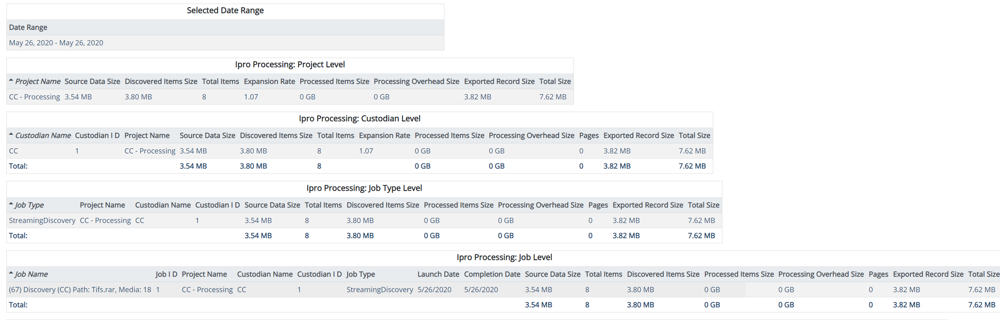

This report presents information on the processed data for a case over a specified date range, aggregated at the project, custodian, job type, and individual job level. Date range is optional. Columns may be sorted. All sizes are exported in GB. For details about the various components displayed in the report, see
Complete the following selections:
Report Title: A report title is selected by default; change the title if needed.
Start/End Dates: Select the starting and ending dates for the time period of interest by clicking in each field and selecting dates from the resulting calendars.
When ready, click Run Report.

|
Component |
Description |
|---|---|
|
Date Range |
If no date range is specified, the default date range becomes the first and last Launch Date of any job type performed in the processing case. |
|
Discovered Items Size |
The sum of all item file sizes after expansion. |
|
Expansion Rate |
The Discovered Items Size divided by the Source Data Size. |
|
Exported Record Size |
The sum of the exported records disk size. This includes text, images, and metadata written to disk on export for each document. |
|
Pages |
This value represents sum of the count of all images generated during streaming imaging, processing, and export. |
|
Processed Items Size |
The sum of the file sizes of the items selected for legacy processing jobs or data extract jobs. |
|
Processing Overhead Size |
The size of all intermediate supporting files generated by the application during streaming discovery, processing, and data extraction. This includes but is not limited to text written to disk during data extraction as well as images created during processing. |
|
Source Data Size |
For discovery jobs, the size of the original source directory or archive. |
|
Total Items |
The total number of items discovered after expansion. |
|
Total Size |
The sum of Discovered Items Size, Processing Overhead Size, and Exported Record Size. |
Related Topics